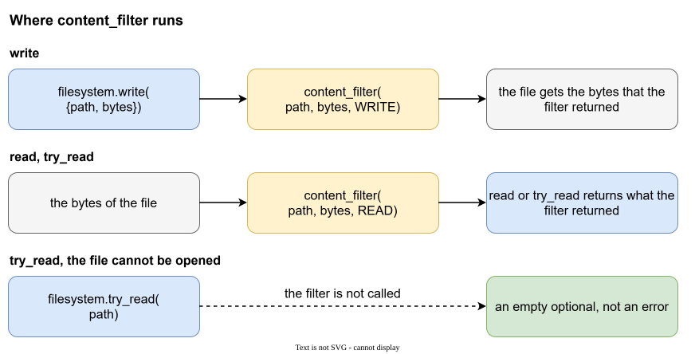

File bytes and content_filter¶
std::filesystem knows about files, not about their contents. The code that reads a file uses std::ifstream, and a test cannot replace that. So filesystem_t has three members for the bytes of a file, and one function that can change the bytes on the way.
using bytes_t = std::string;
using bytes_ot = std::optional<bytes_t>;
using try_read_ft = std::function<bytes_ot (const path_t&)>;
using read_ft = std::function<bytes_t (const path_t&)>;
using write_ft = std::function<void (const write_t&)>;
struct write_t
{
path_t path;
bytes_t bytes;
};
The bytes are a std::string. The files are opened in binary mode, so nothing is translated.
try_read, read and write¶
| member | does |
|---|---|
try_read(path) |
returns the bytes, or an empty optional when the file cannot be opened. That is not an error: on_error does not run |
read(path) |
returns the bytes. When the file cannot be opened it is an error: filesystem_error goes to on_error |
write({.path, .bytes}) |
replaces the bytes of the file. The file is created, or truncated if it exists |
Use try_read when a missing file is normal, for example an optional config. Use read when a missing file is a failure.
// the text of dir/config.txt, or an empty string when there is none
filesystem.try_read(dir / "config.txt").value_or("");
An empty optional is different from an empty file: an empty file is bytes_ot{""}.
content_filter¶
content_filter is a function that gets the bytes on their way in and out of the filesystem and returns the bytes to use instead:
enum class content_filter_direction_et
{
READ,
WRITE
};
using content_filter_ft = std::function<bytes_t (
const path_t&,
const bytes_t&,
content_filter_direction_et
)>;
The arguments are the path, the bytes, and the direction:
| direction | the bytes are | the result is |
|---|---|---|
READ |
what the filesystem read from the file | what read or try_read returns |
WRITE |
what the caller gave to write |
what the filesystem writes to the file |
Use it for what must happen to every file: decoding, decrypting, converting line endings, removing a byte order mark. The code that calls read and write does not change.
An empty content_filter leaves the bytes as they are.

With make_filesystem¶
Pass the filter to make_filesystem. It is applied to try_read, read and write before the filesystem is returned.
This filter shifts every byte up by one on the way to the disk and down on the way back. The shift is a stand-in for real encryption:
const auto filesystem = virtual_filesystem::make_filesystem({
.content_filter = [](
const virtual_filesystem::path_t&,
const virtual_filesystem::bytes_t& bytes,
const virtual_filesystem::content_filter_direction_et direction
)
{
const auto shift = direction == virtual_filesystem::content_filter_direction_et::WRITE ? 1 : -1;
auto result = bytes;
std::ranges::transform(result, result.begin(), [shift](const char c)
{
return static_cast<char>(c + shift);
});
return result;
}
});
filesystem.write({.path = file, .bytes = "HAL"});
filesystem.read(file); // "HAL"
filesystem.try_read(file); // "HAL"
A filesystem without the filter sees what is on the disk:
const auto plain = virtual_filesystem::make_filesystem({});
plain.read(file); // "IBM"
With a filesystem you built¶
A filesystem_t that you filled by hand, for a test, has its content_filter set but not applied. Call apply_content_filter once. It wraps the three members of the filesystem:
void apply_content_filter(filesystem_t&);
virtual_filesystem::bytes_t on_disk = "one\r\ntwo\r\n";
virtual_filesystem::filesystem_t filesystem;
filesystem.read = [&](const virtual_filesystem::path_t&)
{
return on_disk;
};
filesystem.write = [&](const virtual_filesystem::write_t& args)
{
on_disk = args.bytes;
};
filesystem.content_filter = [](
const virtual_filesystem::path_t&,
const virtual_filesystem::bytes_t& bytes,
const virtual_filesystem::content_filter_direction_et direction
)
{
if (direction == virtual_filesystem::content_filter_direction_et::WRITE)
{
return bytes;
}
auto text = bytes;
std::erase(text, '\r');
return text;
};
virtual_filesystem::apply_content_filter(filesystem);
filesystem.read("notes.txt"); // "one\ntwo\n": the carriage returns are gone
The test checks the filter without any file: the fake read returns what the "disk" holds, and the filter turns it into what the code sees.
Warning
apply_content_filter wraps what the members are at the moment of the call. Call it once. A second call wraps the wrapped members, and the filter runs twice. make_filesystem already calls it, so do not call it again on its result.
Details¶
try_readcalls the filter only when it has bytes. A missing file stays an empty optional and the filter is not called.- The filter wraps the members from the outside. An exception from the filter leaves the call;
on_errordoes not see it. - If
readfails andon_errorreturns,readreturns empty bytes and the filter is called with them. - The filter sees every file the same way. Look at the path when files differ.
- The logger sees
TRY_READ,READandWRITE. The filter is not a call of its own and is not logged.